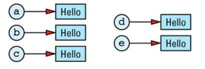

条款29：引用计数
引用计数是这样一个技巧，它允许多个有相同值的对象共享这个值的实现，两个动机
1.简化跟踪堆中的对象的过程，跟踪记录对象的所有权
2.让所有的对象共享这个值的实现
String a,b,c,d,e;
a=b=c=d=e="Hello";
我们知道string的operator=是这样实现的
String& String::operator=(const String& rhs)
{
if (this == &rhs) return *this; // see Item E17
delete [] data;
data = new char[strlen(rhs.data) + 1];
strcpy(data, rhs.data);
return *this; // see Item E15
}
所以a,b,c,d,e每个对象都有“Hello”的拷贝

理想状态为

引入计数：

（1）实现引用计数
这个计数值，不能在 String对象内部，因为需要的是每个 String值一个引用计数值，而不是每个String对象一个引用计数。这意味着String值和引用计数间是一一对应的关系，所以我们将创建一个类来保存引用计数及其跟踪的值。为了便于 Sting 的所有成员函数读取其数据区，我们将StringValue 申明为 struct。需要知道的是：将一个 struct 内嵌在类的私有区内，能便于这个类的所有成员访问这个结构，但阻止了其它任何人对它的访问。
可以 这样设计
class String {
public:
... // the usual String member
// functions go here
private:
struct StringValue { ... }; // holds a reference count
// and a string value
StringValue *value; // value of this String
};
这样实现StringValue
class String {
private:
struct StringValue {
int refCount;
char *data;
StringValue(const char *initValue);
~StringValue();
};
...
};
String::StringValue::StringValue(const char *initValue)
: refCount(1)
{
data = new char[strlen(initValue) + 1];
strcpy(data, initValue);
}
String::StringValue::~StringValue()
{
delete [] data;
}
剩下的功能有String类提供
首先构造函数
class String {
public:
String(const char *initValue = "");
String(const String& rhs);
...
};
String::String(const char *initValue
: value(new StringValue(initValue))
{}
String s("More Effective C++");

拷贝构造函数：新生成的 String 对象与被拷贝的对象共享相同的StringValue 对象
String::String(const String& rhs)
: value(rhs.value)
{
++value->refCount;
}
String s1("More Effective C++");
String s2 = s1;

这肯定比通常的（不带引用计数的）string 类高效，因为不需要为新生成的 string值分配内存、释放内存以及将内容拷贝入这块内存。现在，我们只不过是拷贝了一个指针并增加了一次引用计数。
析构函数
String::~String()
{
if (--value->refCount == 0) delete value;
}
赋值操作符
对于是s1=s2；
其结果应该是 s1 和 s2 指向相同的 StringValue 对象。对象的引用计数应该在赋值时被增加。并且，s1原来指向的StringValue对象的引用计数应该减少，因为s1 不再具有这个值了。如果 s1 是拥有原来的值的唯一对象，这个值应该被销毁。
（2）写时拷贝
考虑下标[ ]
class String {
public:
const char&
operator[](int index) const; // for const Strings
char& operator[](int index); // for non-const Strings
...
};
const char& String::operator[](int index) const
{
return value->data[index];
}
非const版本会出现问题，可能读，也可能写，写的时候可能改变其他共享的StringValue独享其他String对象的值。
当我们返回StringValue对象中的一个字符的引用时，必须确保这个StringValue的引用计数是 1。
当我们返回StringValue对象中的一个字符的引用时，必须确保这个StringValue的引用计数是 1。
har& String::operator[](int index)
{
// if we're sharing a value with other String objects,
// break off a separate copy of the value for ourselves
if (value->refCount > 1) {
--value->refCount; // decrement current value's
// refCount, because we won't
// be using that value any more
value = // make a copy of the
new StringValue(value->data); // value for ourselves
}
// return a reference to a character inside our
// unshared StringValue object
return value->data[index];
}
（3）指针、引用与写时拷贝
考虑下述情况
String s1 = "Hello";
char *p = &s1[1];

String s2 = s1;

*p = 'x'; //同时修改了s1和s2
解决方法为增加一个标志位，在非const[]的operator[]被调用时将其关闭，只写出需要修改的部分
class String
{
...
bool shareable;；
}
String::StringValue::StringValue(const char *initValue)
: refCount(1),
shareable(true) // add this
{
data = new char[strlen(initValue) + 1];
strcpy(data, initValue);
}
char& String::operator[](int index)
{
if (value->refCount > 1) {
--value->refCount;
value = new StringValue(value->data);
}
value->shareable = false; // add this
return value->data[index];
}
(4)带引用计数的基类
class RCObject {
public:
RCObject();
RCObject(const RCObject& rhs);
RCObject& operator=(const RCObject& rhs);
virtual ~RCObject() = 0;
void addReference();
void removeReference();
void markUnshareable();
bool isShareable() const;
bool isShared() const;
private:
int refCount;
bool shareable;
};
实现
RCObject::RCObject()
: refCount(0), shareable(true) {}
RCObject::RCObject(const RCObject&)
: refCount(0), shareable(true) {}
RCObject& RCObject::operator=(const RCObject&)
{ return *this; }
RCObject::~RCObject() {} // virtual dtors must always
// be implemented, even if
// they are pure virtual
// and do nothing (see also
// Item M33 and Item E14)
void RCObject::addReference() { ++refCount; }
void RCObject::removeReference()
{ if (--refCount == 0) delete this; }
void RCObject::markUnshareable()
{ shareable = false; }
bool RCObject::isShareable() const
{ return shareable; }
bool RCObject::isShared() const
{ return refCount > 1; }
修改String类
class String {
private:
struct StringValue: public RCObject {
char *data;
StringValue(const char *initValue);
~StringValue();
};
...
};
String::StringValue::StringValue(const char *initValue)
{
data = new char[strlen(initValue) + 1];
strcpy(data, initValue);
}
String::StringValue::~StringValue()
{
delete [] data;
}
只是将StringValue成员函数处理的工作交给了RCObject